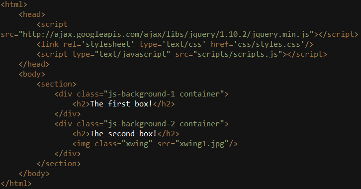
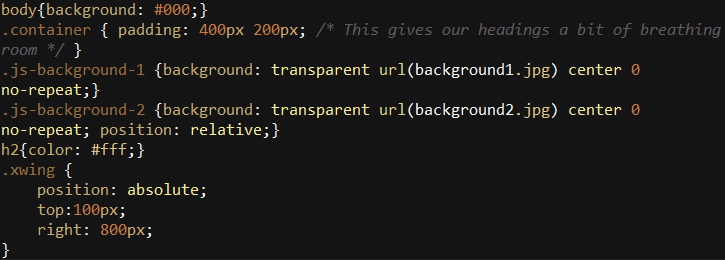

What Is Parallax Scrolling?
Parallax Scrolling is a new web development techinique that shows no sign of slowing down. Its being used by game designers and various other artists to display a beautiful seamless experience. Its been around for a couple years but has been picked up recently by many web developers to allow them to show their skill and creativity.
You might be wondering, what exactly is Parallax Scrolling? Parallax scrolling creates a intuative seamless website that allows for you to switch through different tabs on the site by simply scrolling. Parallax scrolling helps create an interactive invironment that allows for the movement of different objects and different velocities. Web developers can allow for the content of the page to change just by the movement and positin of your curser.
If that catches your interest just as much as it did mine I have several different examples of Parallax scrolling below.
Parrallax Examples
Making Your Page Use Parallax Scrolling
Giving your page such a fantastic feel is no easy task. One thing you can do if your not excited about making your page from scratch is go to parallax.js and download their javascript to impliment in your site.
For those seeking adventure and maybe frustration can code it from scratch. Im going to go over some example code of parallax scrolling.
HTML
Lets start with the HTML part first. We will create 2 div's or sections if youd like and give each one a header.
CSS
The CSS is going to be simple:
jQuery
In the jQuery were going to make one function that handles all my events that are occuring:

Once all the code is in place you should have your first experience with Parallax. If you have any experience with jQuery go through line by line and you will be able to figure out exactly what its doing. If you dont want to take the time to code this you can go to my example here.